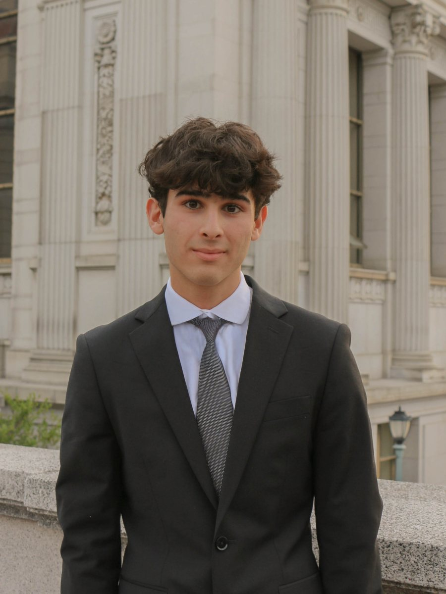
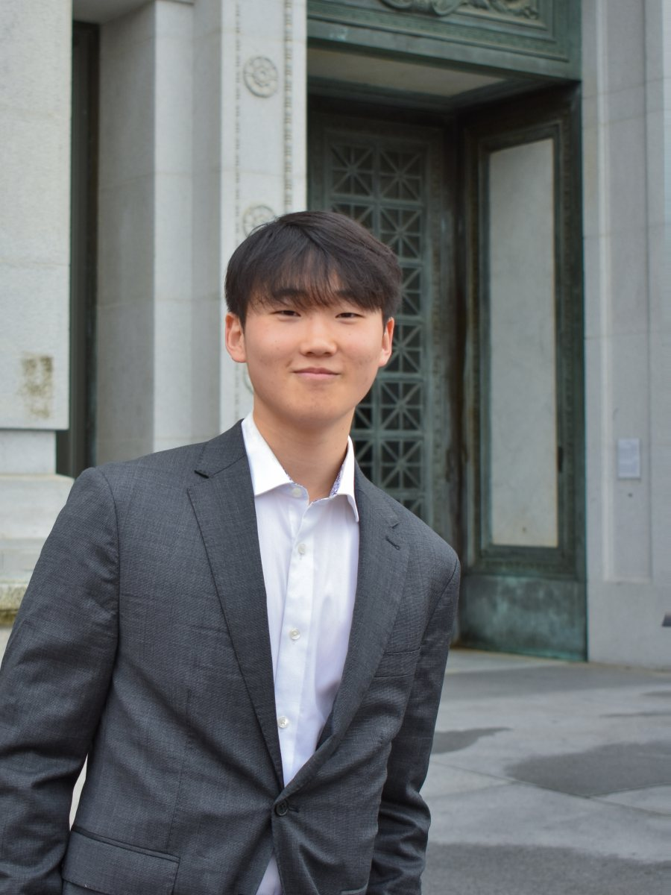
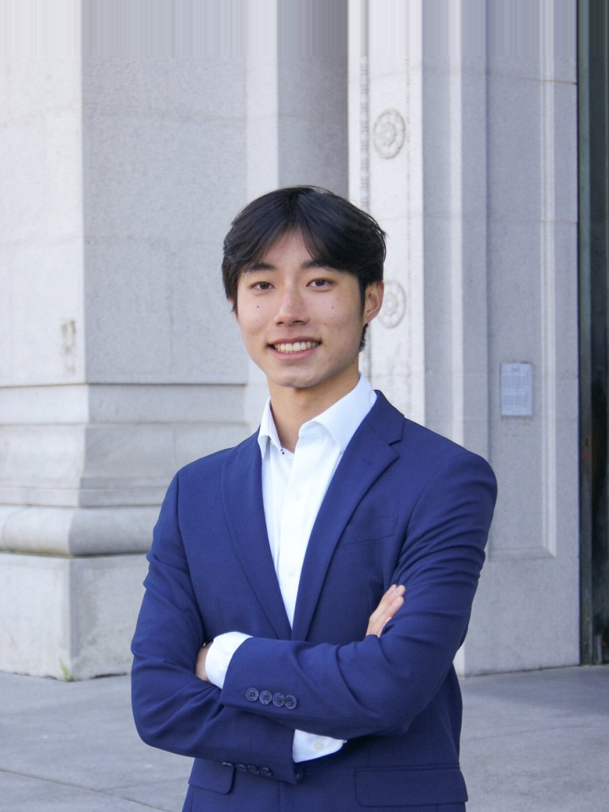
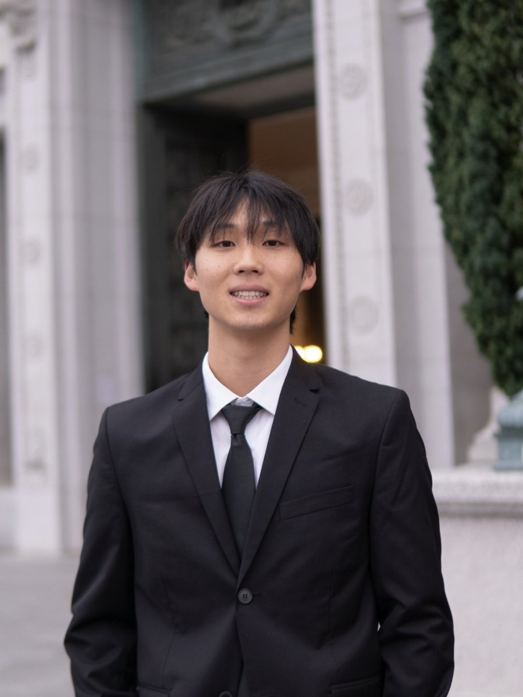
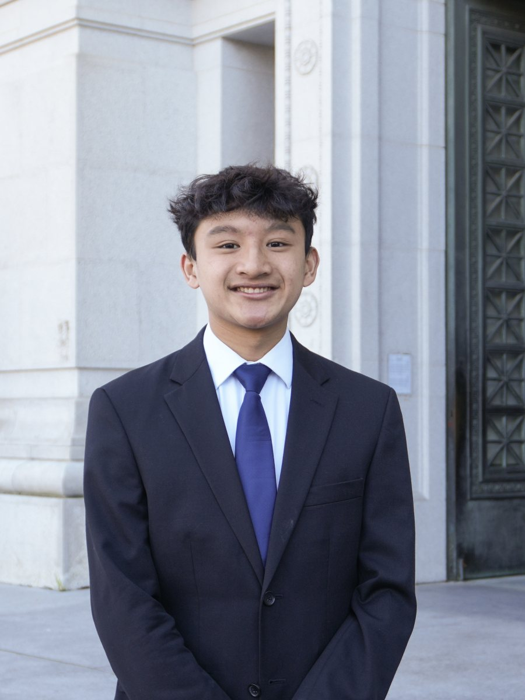
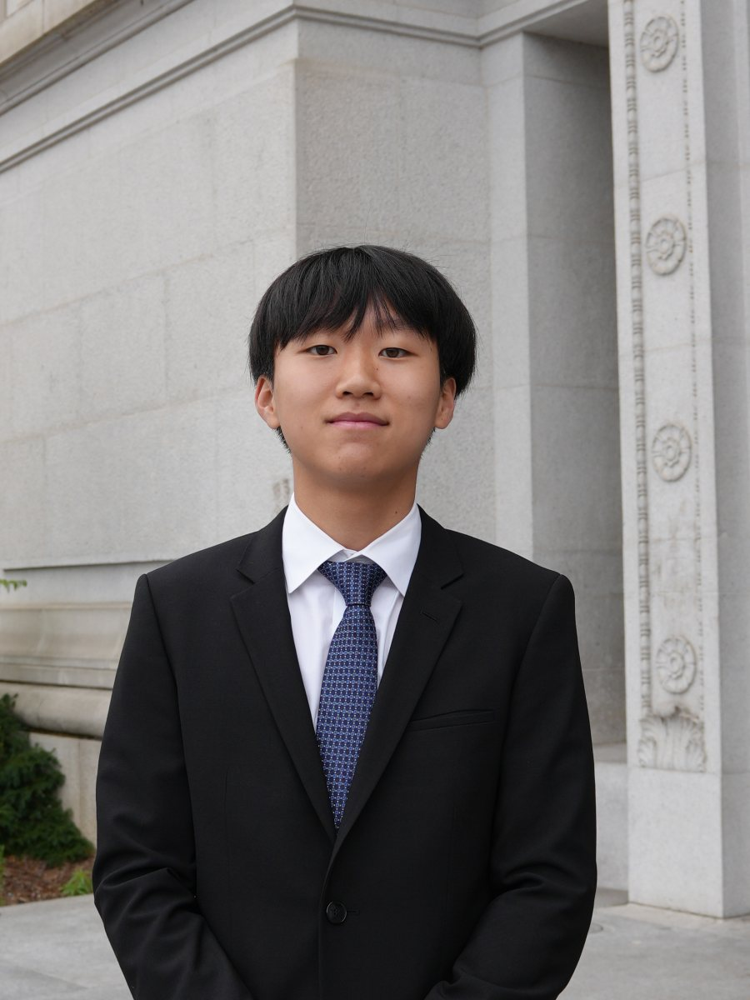

Biotech
Biotechnology is transforming the future of healthcare through breakthroughs in artificial intelligence, gene editing, precision medicine, and novel therapeutics. The Biotech curriculum provides members with a comprehensive understanding of how scientific innovation moves from the laboratory to the patient. Through interactive workshops, collaborative projects, real-world case studies, and industry discussions, members will explore how AI is accelerating drug discovery and advancing personalized medicine, alongside topics such as regulatory strategy, commercialization. By integrating life sciences, technology, and business, members will develop the knowledge and skills needed to thrive in one of the world’s fastest-growing and most impactful industries.

Sami Ridi
Biotech ChairHello my name is Sami and I am a senior studying Middle Eastern Language and Cultures on a Pre-Med track. My interests lie in the humanitarian, public health, and the infrastructural implications of healthcare and plan on working on providing accessible healthcare to underserved communities. In my free time I enjoy bouldering, eating food, and photography.

Richard Yong
Biotech ChairHi everyone! My name is Richard and I am a Senior studying Integrative Biology. I am planning on pursuing dentistry or something within the biotechnology field. Some hobbies of mine are hanging with my friends and going to the gym. If you have any questions feel free to reach out! Excited to meet everyone!
Consulting
The consulting curriculum is designed to equip members with the fundamental skills necessary to break into consulting. The program focuses on a few core areas, including business strategy, communication and presentation, problem solving, and project management skills. We will lead new members through interactive workshops, hands-on case studies, and team-based projects to enable them to grow professionally whilst fostering a tight-knit community.

Lucas Chang
Consulting ChairHey! My name's Lucas and I'm a junior majoring in Business and Data Science. My professional interests lie in consulting, product management, tech and AI. This past summer I was a consulting intern at ZS Associates working in the healthcare and rare diseases sector. Outside of work you'll find me playing pickleball and soccer, backpacking, and running!
Isabel Xu
Consulting ChairHello! My name is Isabel and I'm a junior studying Business Administration. My career goals lie in accounting, risk management, strategy consulting, and corporate finance. I am particularly interested in how the finance sector can be transformed into one that is sustainable and ethical. I will be an incoming audit intern at EY this summer, and I have previously worked on projects such as BMW, Blackrock, and Roche. My personal hobbies include trying new food spots to rate on Beli, going to concerts with my friends, running, and watching kdramas. Feel free to reach out with any questions!
Marketing
Marketing is all about the connection between the company and the customer. Within the marketing committee, the curriculum will teach how to leverage numerous strategies in order to drive a product or brand's market awareness, engagement, and loyalty. Through collaborative projects and interactive workshops, members will gain hands-on experience to prepare them for future professional opportunities. Topics covered will include decking, casing, brand strategy, campaign building, and many more.

Aiden Park
Marketing ChairHey! My name is Aiden, and I'm currently a Junior studying Business Administration and Analytics. I’m interested in strategy consulting and product management, particularly within finance and tech. In my free time, you’ll usually find me cooking, eating, or trying to get better at golf and pickleball. Feel free to reach out if you want to chat or have any questions!
Katelynn Tran
Marketing ChairHi! My name is Kate and I'm currently a junior studying Cognitive Science. I'm passionate about marketing, product design, brand strategy and creative roles. Previously, I worked as a marketing strategy intern at Capcom and a student marketing assistant at the Greater Good Science Center, and I was also an analyst for consulting projects with Google and Pinterest. In my free time I love going on hikes, reviewing movies on Letterboxd, attending live music events, trying cafes, listening to philosophy podcasts and playing video games! Feel free to reach out for a coffee chat or if you have any questions! :)
Technology
The technology committee focuses on bridging software and engineering with business consulting through a rigorous curriculum. New members will develop practical skills and industry-relevant processes used by software engineers, data analysts, and AI/ML engineers, while deepening their understanding of how business strategies are utilized in the tech industry. They will take a deep dive into Python, data analysis and visualization, AI engineering, product development, and consulting for tech corporations. The curriculum culminates in a mock client case where members will explore real-world data, draw insights, design a feature addressing business goals, and present their findings and decisions to a mock panel.

Alden Brion
Technology ChairHi, my name is Alden and I'm currently a junior studying Mechanical Engineering with a minor in Data Science. My career interests lie within the realm of hardware/computer engineering, robotics, and AI/ML. Previously, I interned at Tesla as a Test Engineering intern, at NASA as an Automation and Analysis Intern, and at an AI startup as a Full Stack Development intern. In my free time, I love hiking, playing spikeball and racket sports, working out, going on photography trips, and spending a night out with friends. Reach out for a coffee chat or connect if you have any questions!

Andrew Choy
Technology ChairHey, my name is Andrew and I'm a junior studying Data Science. I'm interested in software engineering, machine learning, and computer vision. I was previously a software development intern at IBM. In my free time, I play soccer, basketball, and make music which I release to Spotify. Feel free to reach out if you want to chat or have any questions!